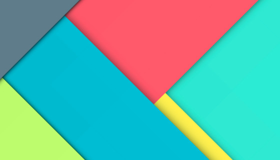

Видал, какая удобная кнопка?
Это я называю юзабилити. Тебе не пришлось тратить ресурс энкодера колесика мыши или стирать кожу со своего пальца. Всего один клик и страница промотана. Технологии будущего!
Шрифты что-то хромают, но до релиза еще поправлю.
